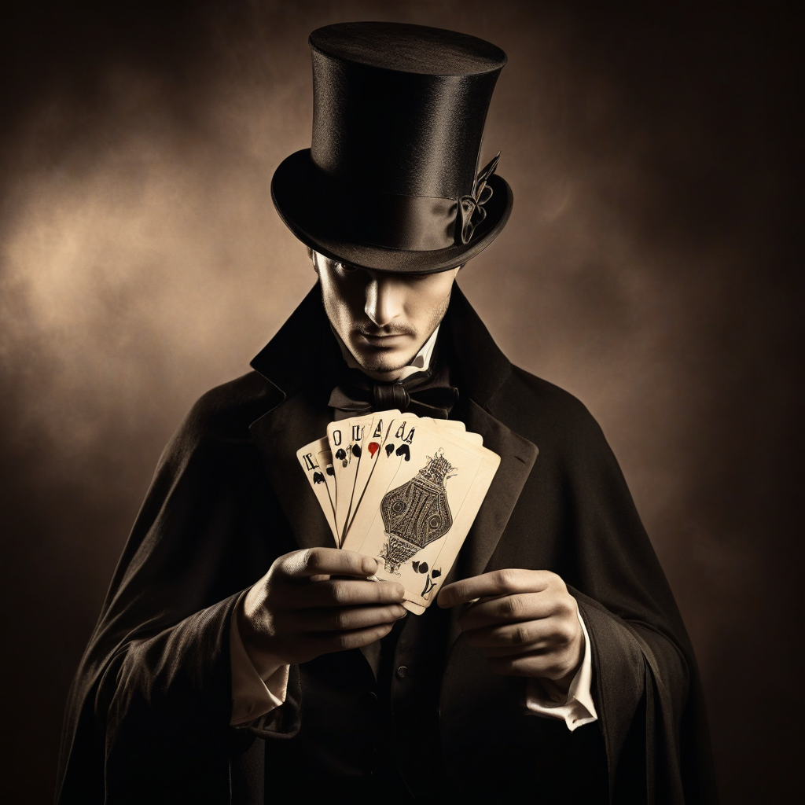
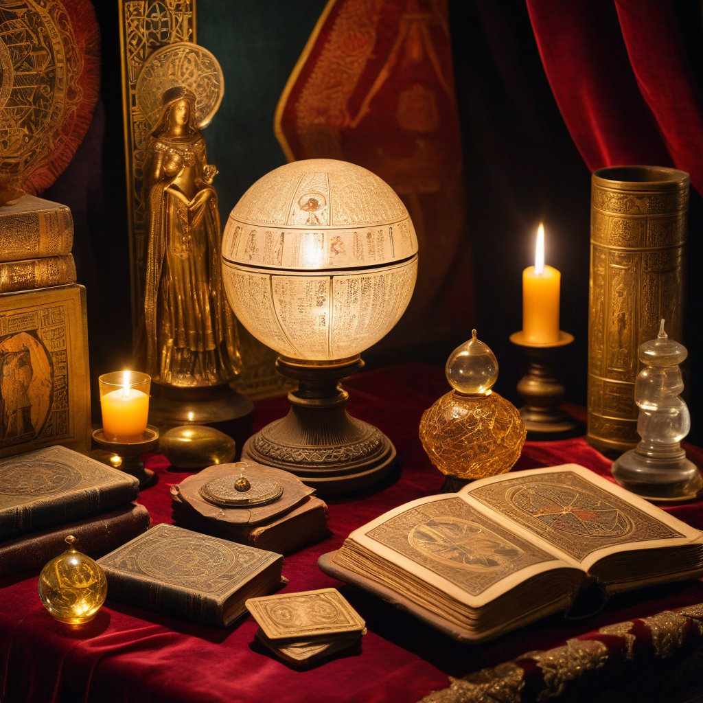
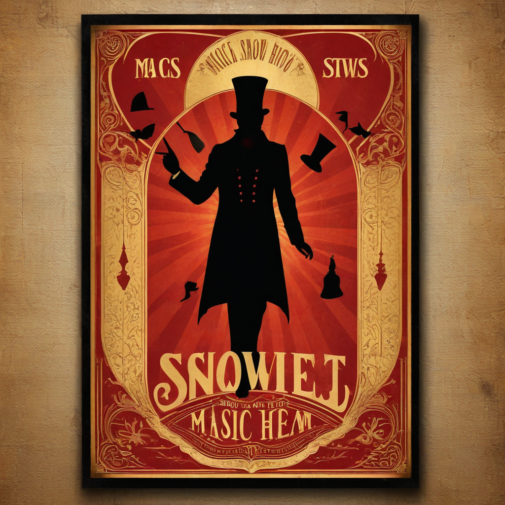

Un viaje a través de 5000 años de ilusionismo, misterio y asombro. La historia definitiva del arte más antiguo de la humanidad.
Comenzar el viaje →La magia es la única forma de arte que puede hacer que el público adulto vuelva a sentir lo que sentía cuando era niño.
Desde los rituales chamánicos del Paleolítico hasta la magia digital del siglo XXI. Explora cada era del ilusionismo.



Sumérgete en cada rincón del ilusionismo: historia, biografías, biblioteca, comunidad y mucho más.
Recibe contenido exclusivo, avances de nuevas secciones y acceso anticipado a la comunidad de magos.